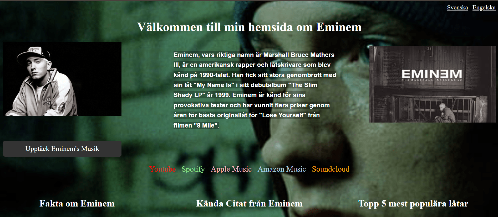
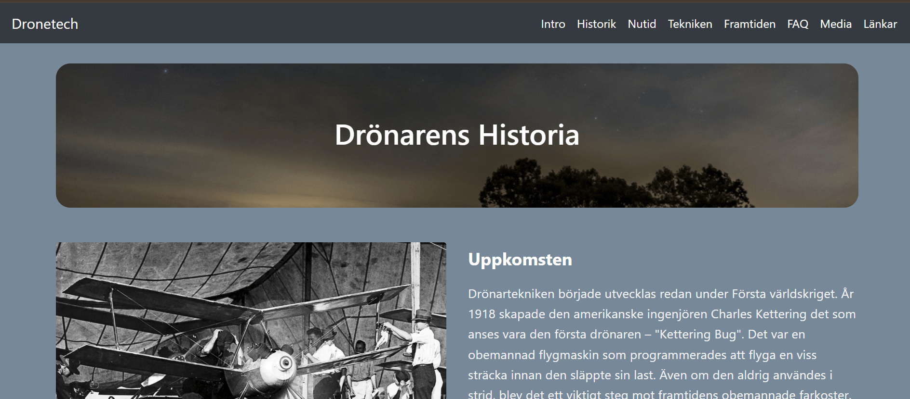
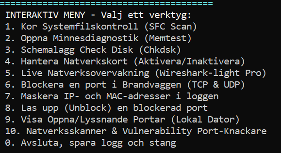
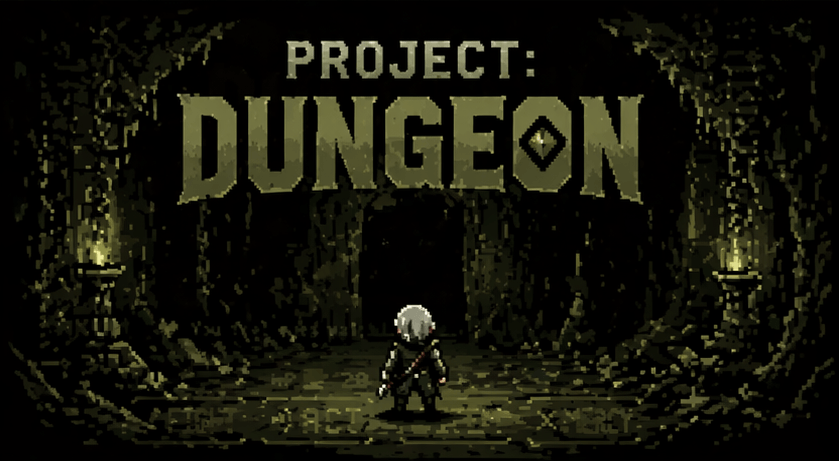

Sida om Eminem
En hemsida om artisten Eminem, med information om hans liv och karriär. En av de första kompletta sidorna jag gjort, med svensk och engelsk version.
En samling av projekt jag har byggt inom webbutveckling och IT.

En hemsida om artisten Eminem, med information om hans liv och karriär. En av de första kompletta sidorna jag gjort, med svensk och engelsk version.

En webbplats om drönare, deras användningsområden och tekniska specifikationer. Slutprojekt i Webbutveckling 1 med responsiv design anpassad för olika enheter.

Ett kraftfullt verktyg för systemövervakning som visar information om datorn, IP-adress och annan kritisk information. Inkluderar nätverksfunktioner som portblockering och en förenklad version av Wireshark för paketanalys.

Dungeon Survivors är ett actionfyllt roguelike-spel där spelaren överlever vågor av fiender i mörka och farliga miljöer. Genom uppgraderingar, unika klasser och intensiva bossfighter blir varje spelomgång unik.